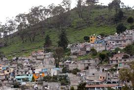
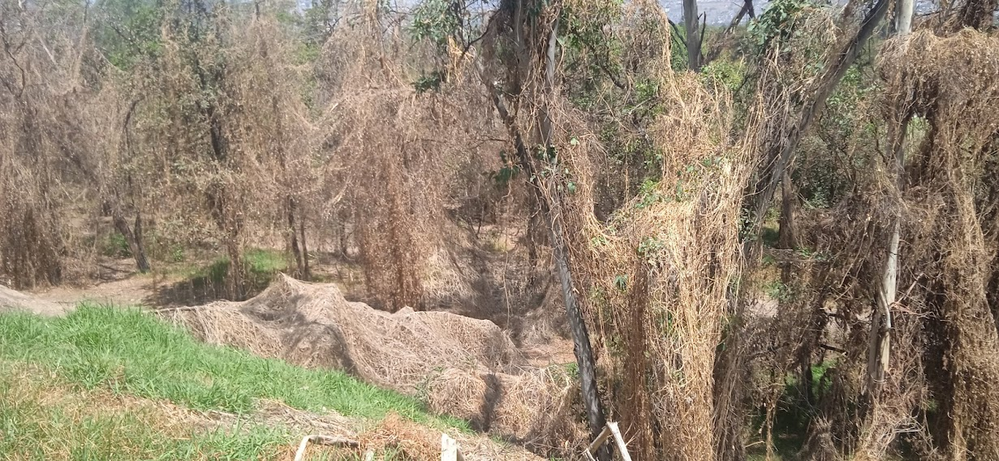

Si continúa la deforestación e invasión por parte de distintas empresas y personas que no respetan la ley y al medio ambiente, existe la posibilidad de que ocurran los siguientes desastres:
- No solo perderíamos el bosque, sino también su flora y fauna, que son el pulmón más importante del municipio de Naucalpan.
- El asentamiento se volvería completamente rural, por ende, habría más contaminación, más basura en las calles, y más problemas entre los pobladores.

- Se perderían los vestigios mexicas encontrados en el cerro de Moctezuma.
- El parque además de ser una reserva ecológica protegida, es una zona recreativa, por lo que las actividades que se solían realizar dentro del bosque desaparecerían.
- Además de perder el bosque, se daría a entender que las leyes de conservación no sirven realmente, y eso daría pauta a que más reservas ecológicas sean invadidas y perjudicadas.
Estas y otras tragedias podrían ocurrir si no salvaguardamos el parque nacional Los Remedios y otras áreas naturales.

SALVEMOS EL PARQUE NACIONAL DE LOS REMEDIOS, NO DEJEMOS QUE MAS ARBOLES DESAPAREZCAN.
POR EL PULMÓN DE NAUCALPAN, POR EL CUIDADO DEL PLANETA.
|